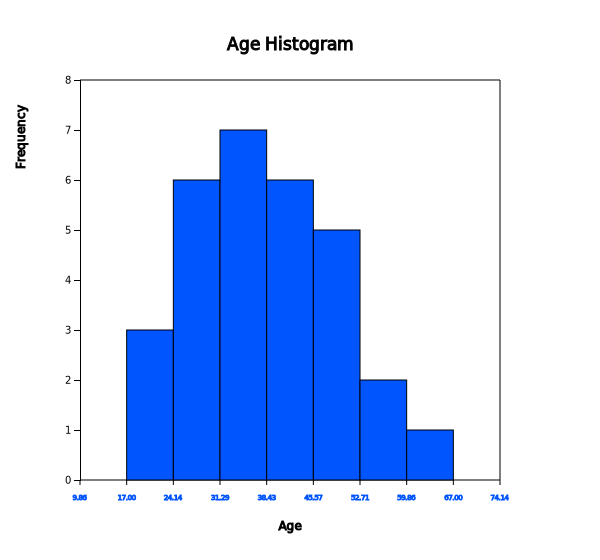
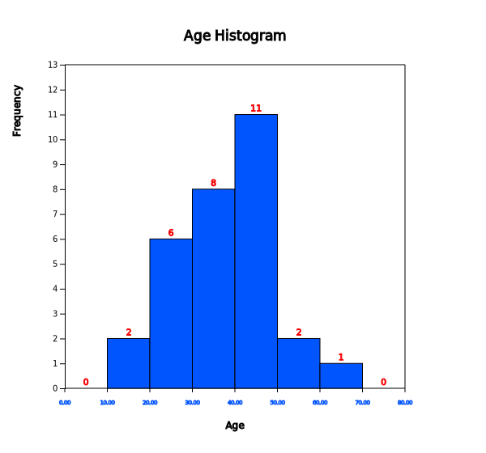

Chapter 11. Testing Hypothesis for Categorical Data
11.1.2 Goodness of Fit Test for Continuous Distribution
[presentation] [video]
Answer
Age is a continuous variable, but you can make a frequency distribution by dividing possible values into intervals as we studied in histogram of Chapter 3. It is called a categorization of the continuous data.
Let's find a frequency table which starts at the age of 10 with the interval size of 10. The histogram of『eStat』makes this frequency table easy to obtain.
If you enter the data as shown in <Figure 11.1.3>, click the histogram icon and select Age from the variable selection box, then the histogram as <Figure 11.1.4> will appear.

<Figure 11.1.3> Data input at『eStat』
|

If you specify 'start interval' as 10 and 'interval width' as 10 in the options window below the histogram, the histogram of <Figure 11.1.4> is adjusted as <Figure 11.1.5>. If you click [Frequency Table] button, the frequency table as shown in <Figure 11.1.6> will appear in the Log Area. The designation of interval size can be determined by a researcher.


Since the normal distribution is a continuous distribution defined at \(-\infty \lt x \lt \infty\) , the frequency table of <Figure 11.1.6> can be written as follows:
| Interval id | Interval | Observed frequency |
|---|---|---|
| 1 | \( X < 20 \) | 2 |
| 2 | \(20 \le X < 30\) | 6 |
| 3 | \(30 \le X < 40\) | 8 |
| 4 | \(40 \le X < 50\) | 11 |
| 5 | \(50 \le X < 60\) | 2 |
| 6 | \( X \ge 60 \) | 1 |
The frequency table of sample data as Table 11.1.2 can be used to test the goodness of fit whether the sample data follows a normal distribution using the chi-square distribution. The hypothesis of this problem is as follows:
This hypothesis does not specify what a normal distribution is and therefore, the population mean \(\mu\) and the population variance \(\sigma^2\) should be estimated from sample data. Pressing the 'Basic Statistics' icon on the main menu of『eStat』will display a table of basic statistics in the Log Area, as shown in <Figure 11.1.7>. The sample mean is 38.567 and the sample standard deviation is 12.982.

Hence, the above hypothesis can be written in detail as follows:
In order to find the expected frequency of each interval when \(\small H_0\) is true, the expected probability of each interval is calculated first using the normal distribution \(\small N(38.000, 11.519^2 )\) as follows. The normal distribution module of 『eStatU』 makes it easy to calculate this probability of an interval. At the normal distribution module of 『eStatU』, enter the mean of 38.000 and the standard deviation of 11.519. Click the second radio button of P(X < x) type and enter 20, then press the [Execute] button to calculate the probability as shown in <Figure 11.1.8>.

<Figure 11.1.8> Calculation of normal probability using『eStatU』
|
Similarly you can calculate the following probabilities.
Expected frequency can be calculated by multiplying the sample size of 30 to the expected probability of each interval obtained above. The observed frequencies, expected probabilities, and expected frequencies for each interval can be summarized as the following table.
| Interval id | Interval | Observed frequency | Expected probability | Expected frequency |
|---|---|---|---|---|
| 1 | \( X < 20 \) | 2 | 0.059 | 1.77 |
| 2 | \(20 \le X < 30\) | 6 | 0.185 | 5.55 |
| 3 | \(30 \le X < 40\) | 8 | 0.325 | 9.75 |
| 4 | \(40 \le X < 50\) | 11 | 0.282 | 8.46 |
| 5 | \(50 \le X < 60\) | 2 | 0.121 | 3.63 |
| 6 | \( X \ge 60 \) | 1 | 0.028 | 0.84 |
Since the expected frequencies of the 1st and 6th interval are less than 5, the intervals should be combined with adjacent intervals for testing the goodness of fit using the chi-square distribution as Table 11.1.4. The expected frequency of the last interval is still less than 5, but, if we combine this interval, there are only three intervals, we demonstrate the calculation as it is. Note that, due to computational error, the sum of the expected probabilities may not be exactly equal to 1 and the sum of the expected frequencies may not be exactly 30 in Table 11.1.4.
| Interval id | Interval | Observed frequency | Expected probability | Expected frequency |
|---|---|---|---|---|
| 1 | \( X < 30 \) | 8 | 0.244 | 7.32 |
| 2 | \(30 \le X < 40\) | 8 | 0.325 | 9.75 |
| 3 | \(40 \le X < 50\) | 11 | 0.282 | 8.46 |
| 4 | \( X \ge 50 \) | 3 | 0.149 | 4.47 |
| Total | 30 | 1.000 | 30.00 |
The test statistic for the goodness of fit test is as follows:
Since the number of intervals is 4, \(k\) becomes 4, and \(m\)=2, because two population parameters \(\mu\) and \(\sigma^2\) are estimated from the sample data. Therefore, the critical value is as follows:
The observed test statistic is less than the critical value, we can not reject the null hypothesis that the sample data follows \(\small N(38.000, 11.519^2 )\) .
Test result can be verified using 'Goodness of Fit Test' in 『eStatU』. In the Input box that appears by selecting the 'Goodness of Fit Test' module, enter the data for 'observation frequency' and 'expected probability' in Table 11.1.4, as shown in <Figure 11.1.9>. After entering the data, select the significance level and press the [Execute] button to calculate the 'expected frequency' and produce a chi-square test result (<Figure 11.1.10>).

<Figure 11.1.9> Data input for goodness of fit test in 『eStatU』
|

|
Practice 11.1.2 (Otter length) Data of 30 otter lengths can be found at the following location of『eStat』.
[Ex] ⇨ eBook ⇨ PR110102_OtterLength.csv
Test the hypothesis that the population is normally distributed at the significance level of 5% using『eStat』. |
Multiple Choice Exercise
*** Choose one answer and click [Submit] button
11.1 What tests do you need to investigate whether the sample data follow a theoretical distribution?
11.2 In order to test whether sample data of a continuous variable follow a distribution, what is the first necessary work for the goodness of fit test?